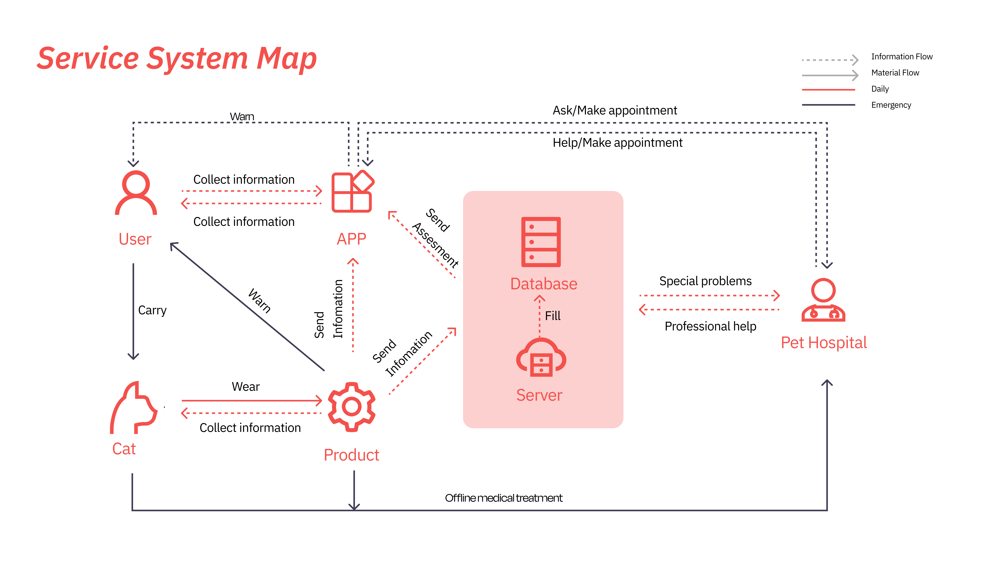
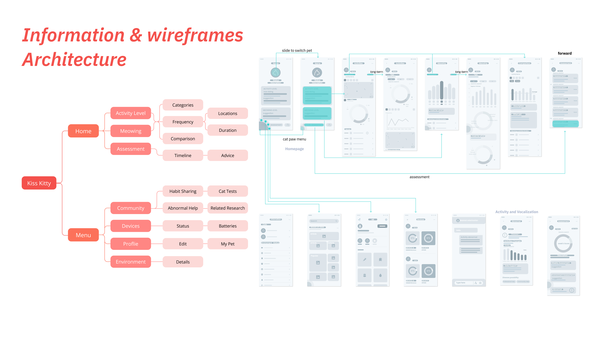

服务设计 · 原型设计
Kiss Kitty
IoT 猫咪健康行为监测服务
背景
Kiss Kitty 探索行为与日常活动数据如何帮助猫主人识别早期健康信号，从而在正确时机寻求专业医疗支持。
问题
猫咪疾病往往被晚期发现，因为行为变化极为细微且容易被忽视，而不同用户的观察质量也存在显著差异。
核心洞察
猫咪善于掩盖不适，行为信号难以被日常观察捕捉，导致就医时机严重滞后。
用户痛点
主人观察能力参差不齐，缺乏系统化的健康基线数据作为对比参照。

图 1. 早期监测需求的背景与疾病情境研究。

图 2. 猫主人观察行为的研究证据与痛点提炼。
设计过程
概念通过服务系统地图、交互流程与线框架构逐步转化，在建立原型方向之前完成了完整的设计推演。

图 3. 连接主人、产品、数据与医院的服务系统地图。

图 4. 核心用户任务的信息架构与线框图。
查看概念与原型细节

图 5. 概念生成、原型探索与产品形态方向。
界面设计
界面将活动规律、叫声趋势与风险指标进行可视化呈现，让日常健康信号对普通主人而言也易于理解与感知。

图 6. 监测、提醒与每日回顾的最终界面方向。
项目成果
Kiss Kitty 定义了一套连贯的服务概念，将行为数据采集与可操作的健康洞察有机链接，有效提升了主人的早期意识与就医决策信心。